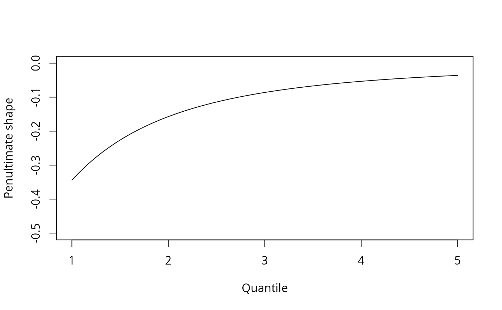
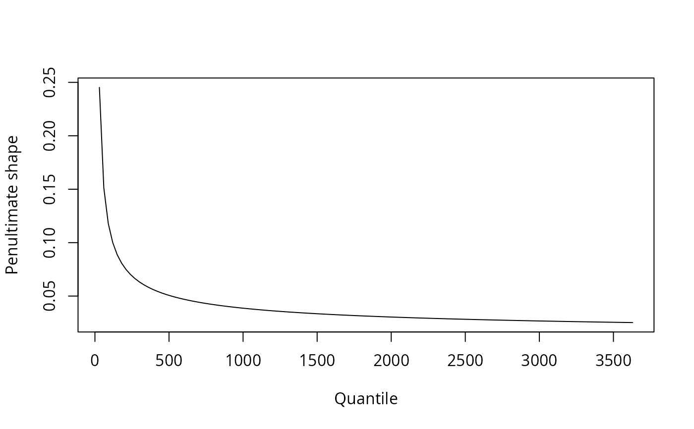

The function takes as arguments the distribution and density functions. There are two options:
method='bm' yields block maxima and method='pot' threshold exceedances.
For method='bm', the user should provide in such case the block sizes via the
argument m, whereas if method='pot', a vector of threshold values should be
provided. The other argument (u or m depending on the method) is ignored.
Usage
smith.penult(family, method = c("bm", "pot"), u, qu, m, returnList = TRUE, ...)Arguments
- family
the name of the parametric family. Will be used to obtain
dfamily,pfamily,qfamily- method
either block maxima (
'bm') or peaks-over-threshold ('pot') are supported- u
vector of thresholds for method
'pot'- qu
vector of quantiles for method
'pot'. Ignored if argumentuis provided.- m
vector of block sizes for method
'bm'- returnList
logical; should the arguments be returned as a list or as a matrix of parameter
- ...
additional arguments passed to
densFanddistF
Value
either a vector, a matrix if either length(m)>1 or length(u)>1 or a list (if returnList) containing
loc: location parameters (method='bm')scale: scale parametersshape: shape parametersu:thresholds (ifmethod='pot')u:percentile corresponding to threshold (ifmethod='pot')m:block sizes (ifmethod='bm')
Details
Alternatively, the user can provide functions densF, quantF and distF for the density,
quantile function and distribution functions, respectively. The user can also supply the derivative
of the density function, ddensF. If the latter is missing, it will be approximated using finite-differences.
For method = "pot", the function computes the reciprocal hazard and its derivative on the log scale to avoid numerical overflow. Thus, the density function should have argument log and the distribution function arguments log.p and lower.tail, respectively.
References
Smith, R.L. (1987). Approximations in extreme value theory. Technical report 205, Center for Stochastic Process, University of North Carolina, 1--34.
Examples
#Threshold exceedance for Normal variables
qu <- seq(1,5,by=0.02)
penult <- smith.penult(family = "norm", ddensF=function(x){-x*dnorm(x)},
method = 'pot', u = qu)
plot(qu, penult$shape, type='l', xlab='Quantile',
ylab='Penultimate shape', ylim=c(-0.5,0))

#Block maxima for Gamma variables -
#User must provide arguments for shape (or rate)
m <- seq(30, 3650, by=30)
penult <- smith.penult(family = 'gamma', method = 'bm', m=m, shape=0.1)
plot(m, penult$shape, type='l', xlab='Quantile', ylab='Penultimate shape')

#Comparing density of GEV approximation with true density of maxima
m <- 100 #block of size 100
p <- smith.penult(family='norm',
ddensF=function(x){-x*dnorm(x)}, method='bm', m=m, returnList=FALSE)
x <- seq(1, 5, by = 0.01)
plot(x, m*dnorm(x)*exp((m-1)*pnorm(x,log.p=TRUE)),type='l', ylab='Density',
main='Distribution of the maxima of\n 100 standard normal variates')
lines(x, evd::dgev(x,loc=p[1], scale=p[2], shape=0),col=2)
lines(x, evd::dgev(x,loc=p[1], scale=p[2], shape=p[3]),col=3)
legend(x = 'topright',lty = c(1,1,1,1), col = c(1,2,3,4),
legend = c('exact', 'ultimate', 'penultimate'), bty = 'n')